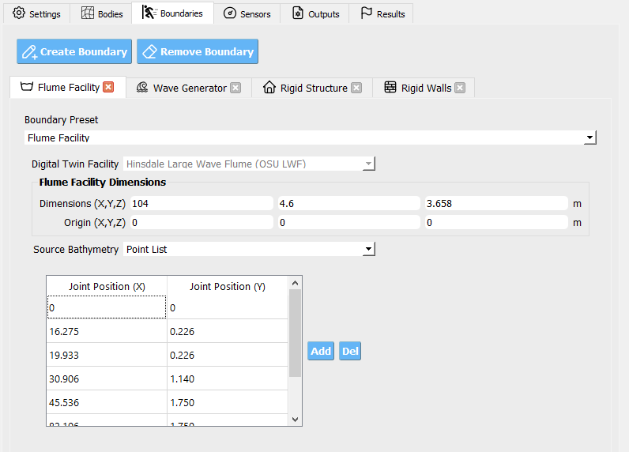
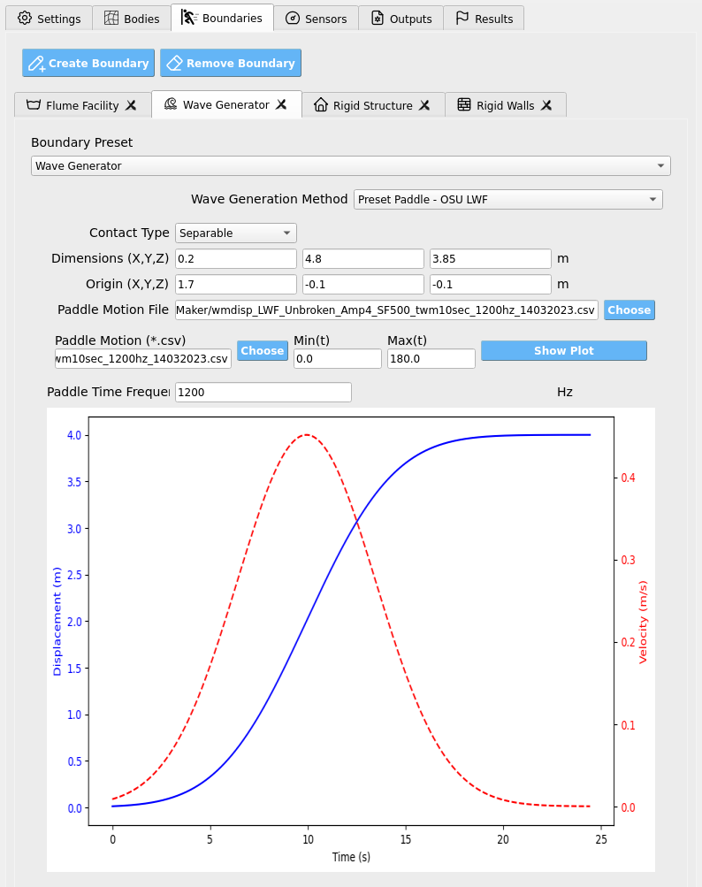
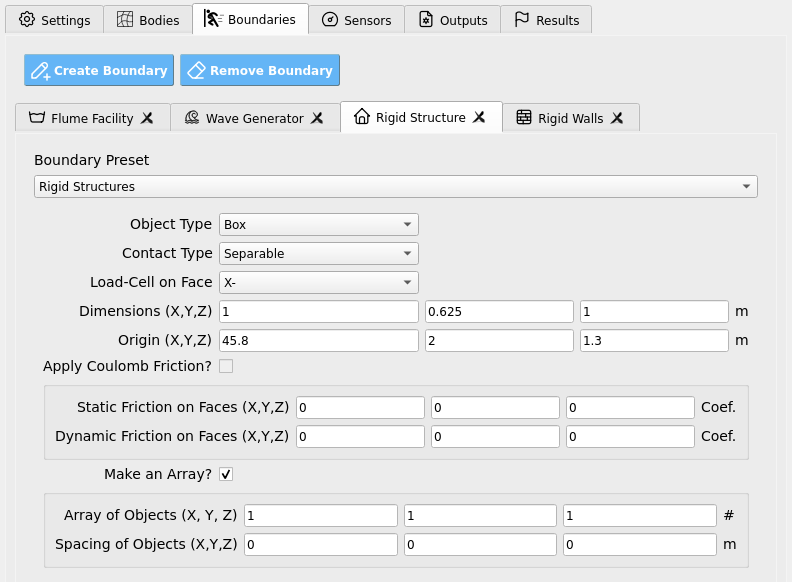
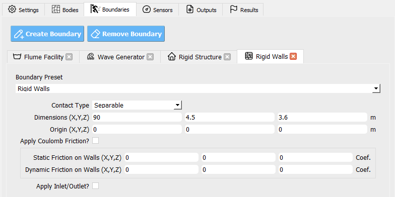

Boundaries
Use the Boundaries tab to define the walls, structures, wave-makers, and other facility elements that interact with the material points. Each boundary has a type, contact behavior, geometry, temporal activation window, and optional motion.
Default Boundary Entities
The GUI provides four preconfigured entities to streamline setup:
Flume Facility Defines the overall flume geometry (e.g., optional bathymetry ramps, and surface friction). Presets are provided for supported physical facilities.
{kind=link}

Wave Generator Configures the mechanism that produces waves (e.g., piston-style wave maker or a velocity boundary condition). Presets match each example facility.
{kind=link}

Rigid Structure Adds an immovable body (commonly a rectangular prism) representing a test specimen. In the Sensors tab you may attach load cells to map forces to structural models (e.g., OpenSees).
{kind=link}

Rigid Walls Sets the computational domain’s enclosing box (the “tank” or “room” the simulation runs in).
{kind=link}

Tip
Start from these defaults and refine parameters rather than building each boundary from scratch.
Boundary Types
Common types include Walls, Box, Sphere, Cylinder, and Plane, along with facility-specific presets (e.g., OSU_LWF_RAMP, OSU_LWF_PADDLE, USGS_RAMP, USGS_GATE, OSU_TWB_RAMP, OSU_TWB_PADDLE, WASIRF_PUMP, TOKYO_HARBOR, and a velocity boundary type). Facility-prefixed types correspond to digital-twin geometries and motions tailored to specific labs.
Note
Some types expose friction fields, others intentionally hide them. If a parameter does not appear for a chosen type, it is not applicable.
Contact & Friction
Contact controls how material points interact with a boundary surface:
Sticky — No slip at the interface (points adhere to the surface).
Slip — Tangential slip allowed; normal penetration prevented.
Separable — Interface can separate (no tension transfer), with optional tangential slip.
Friction (when available):
Static friction coefficient — Onset threshold for sliding (≥ 0).
Dynamic friction coefficient — Sliding resistance once motion begins (≥ 0).
Important
Use Slip with low friction for hydraulically smooth walls, Sticky to anchor material to moving parts (e.g., a paddle), and Separable where loss of contact is physically expected (lift-off, cavitation zones, etc.).
Warning
Excessively large friction can cause artificial sticking and nonphysical force spikes; start modestly and calibrate.
Geometry & Extents
Define where a boundary exists in space:
Domain Start — The corner/point nearest the origin.
Domain End — The opposite corner/point farthest from the origin.
These two vectors bound the region where the boundary acts (e.g., the size and placement of a wall, paddle track, or structure).
Tip
Ensure each component of Domain End is greater than the corresponding Domain Start component to produce a positive-size region.
Activation Window (Time)
Control when a boundary is active by specifying two times:
Start time — When the boundary appears/enables.
End time — When the boundary disappears/disables.
This is useful for staged motions (e.g., start the paddle after still-water settling, or retract a gate at a given time).
Motion Options
Some boundaries can move or impose velocities.
Constant Velocity — A vector speed applied continuously (e.g., a uniform inflow/outflow or translating plane).
Motion File — A CSV time series driving a moving boundary (e.g., a piston wave maker). The file contains rows of: - Time (s) - Velocity along the actuation axis (m/s; typically X by default) - Position along the actuation axis (m; measured relative to the boundary’s local origin between your Domain Start/End)
Use Sampling Frequency to indicate the data rate (Hz). Intermediate samples are interpreted at fixed increments of the frequency’s inverse.
Note
The motion file’s position should be consistent with the chosen Domain orientation. Keep your sign convention and axis alignment consistent across all boundaries.
Parameter Reference
Parameter |
What it controls |
Units / Notes |
|---|---|---|
Type |
Boundary geometry/preset (e.g., Wall, Plane, Facility-specific paddle/ramp, velocity boundary). |
Choose from the GUI list. |
Contact |
Interface behavior: Sticky, Slip, or Separable. |
Affects tangential slip and normal separation. |
Static Friction |
Sliding onset threshold when contact is engaged. |
≥ 0; shown only for applicable types. |
Dynamic Friction |
Resistance during sliding motion. |
≥ 0; shown only for applicable types. |
Active Time (Start, End) |
Enables/disables the boundary between two times. |
Seconds |
Domain Start |
Lower/near corner of the boundary’s extent. |
Meters |
Domain End |
Upper/far corner of the boundary’s extent. |
Meters (must exceed Start per component) |
Constant Velocity |
Prescribed velocity vector (if supported). |
m/s |
Motion File |
CSV with time, velocity (axis), and position (axis). |
Axis typically X; relative to local domain. |
Sampling Frequency |
Data rate for interpreting motion file samples. |
Hz |
Best-Practice Workflow
Pick a type that matches the physical element (facility preset for flumes, Plane/Wall for simple boundaries, velocity boundary for inflow/outflow).
Set Domain Start/End to place and size it correctly.
Choose Contact consistent with physics; add friction only where supported/needed.
Define Active Time so motions begin after initial transients settle.
For moving boundaries, use a clean Motion File with proper sampling and axis alignment, or a Constant Velocity when appropriate.
Validate with quick, short runs (coarse grid, short duration) and inspect force/velocity responses before scaling up.
Warning
Misaligned domains or inverted extents will yield missing or misapplied boundaries. If a boundary appears to have no effect, first verify Domain coordinates, activation times, and contact settings.